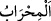

Burada Allah Teâlâ’nın şeytanların sıfatlarını da Süleyman (a.s.)’ın emrine verdiğine
işâret vardır. Nitekim bizim Peygamberimiz (s.a.) şöyle buyurmuştur: “Allah Teâlâ beni
şeytanıma hâkim kıldı da benim elimde müslüman oldu. Artık bana hayırdan başka
bir şey emretmez.”[13] Bâtınî kuvvetler emre âmâde olunca sûrî mazharlar da emre
âmâde olur. Böylece zulmet gider ve nur gelir. Keder zâil olur ve sevinç hâsıl olur. İşte
nihâyet makamlarında kâmil kimselerin hâli budur.
13. Onlar Süleyman’a kalelerden, heykellerden, havuzlar kadar (geniş)
leğenlerden, sâbit kazanlardan ne dilerse yaparlardı. Ey Dâvud âilesi! Şükredin.
Kullarımdan şükreden azdır!
Bu âyette cinlerin yaptıkları işler açıklanmaktadır.
“Onlar Süleyman’a kalelerden ... ne dilerse yaparlardı.”
Burada Süleyman (a.s.)’ın istedikleri beyan edilmektedir.
“
” kelimesi, “
” kelimesinin çoğuludur. el-Kâmûs’ta der ki: “
” oda,
evin başköşesi ve en değerli yeridir. Camide imâmın makamı, sarayda sultanın diğer
insanlardan ayrı olarak bulunduğu özel yerdir.” el-Müfredât’ta ise şöyle der: “Mescidin
mihrâbına bu ismin verilmesi hakkında şöyle denilmiştir: Çünkü burası şeytan ve hevâ
ile muhârebe yeridir. Yahut orada insana lâyık olanın dünya meşgalelerinden ve
gönlünün dağınık olmasından uzak olmasından dolayı mihrâba bu isim verilmiştir.
Denilir ki: Bu kelimenin asıl anlamı, evin en değerli yeri ve meclisin başköşesidir.
Sonradan camiler inşa edilince onların başköşesine de bu isim verilmiştir. Yine
kelimenin mescidin hakkında asıl olduğu, mescidin başköşesinin “mihrab” diye
isimlendirildiği, evin başköşesinin de mescidin başköşesine benzetilerek “mihrab” diye
isimlendirildiği söylenmiştir. Bu görüş daha doğrudur.”
Buna göre mânâ şöyle olur: ‘Cinler Süleyman (a.s.)’a muhkem kaleler ve pek değerli
meskenler yapıyorlardı.’ Bu kalelere “
” denilmesi, düşman bunlardan kovulduğu
ve üstlerinde savaş yapıldığı içindir. Celaleyn Tefsîri’nde “
” kelimesinin
mânâsına mescidler de katılmıştır.
Müfessirler şöyle demişlerdir: Şeytanlar Süleyman (a.s.)’a Şam’da bir belde olan
Tedmür şehrini ve Yemen’de enteresan bir takım binâlar inşâ ettiler. Bunlar Sırvâc,
Mirvâc, Beynûn, Selehıyn, Hinde, Hüneyde, Feltûm, Gumdân ve benzerleridir. Şimdi
bunların tamamı harap olmuştur. Yine şeytanlar Süleyman (a.s.) için son derece güzel ve
pek değerli olarak Beytü’l-makdis’i inşâ ettiler.
Siyer müellifleri şöyle nakletmişlerdir: Âlemlerin Rabbi İbrahim (a.s.)’ın nesline